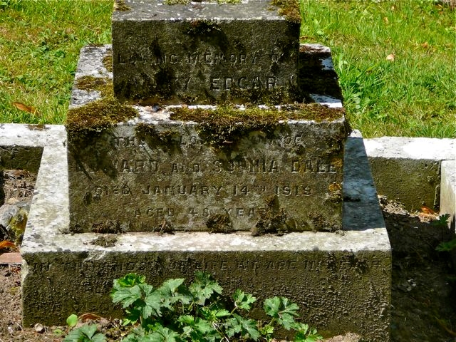
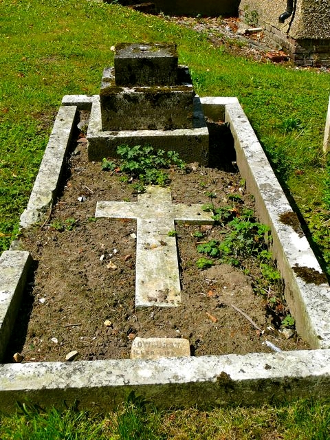
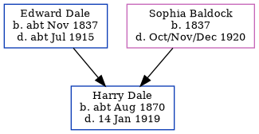

Harry Edgar Dale cAug 1870 - 1919
[ Home ] | [ Calendar ] | [ Surnames Index ] | [ Family History ]A coal laborer and the child of Edward Dale (a bricklayer's laborer) and Sophia Baldock, Harry Dale, the first cousin three-times-removed on the father's side of <a href="I1.html">Nigel Horne</a>, was born in Thanington, Kent, England <i>c.</i> Aug 1870<span class="citation">1</span> and baptized there at St Nicholas on Aug 28, 1870.</p><p>Harry spent all of his life in Kent, England. Throughout his life, he lived in several places around the county: at Modern Cottages, Wincheap Street in Thanington on Apr 2, 1871<span class="citation">4</span>; on Sturry Road, Canterbury, Kent, England on Apr 3, 1881<span class="citation">5</span> and on Mar 31, 1901<span class="citation">6</span> (when he was living with his parents); and on Lion Cottages, Sturry Road in Canterbury on Apr 2, 1911<span class="citation">7</span> (when he was living with his parents). <p>He died on Jan 14, 1919 in Thanington<span class="citation">2</span> and was buried there at St Nicholas on Jan 18, 1919<span class="citation">3</span>.
Parents
- Edward was born c. Nov 1837
- Sophia was born in 1837
Citations
- England & Wales births 1837-2006 - Findmypast
- England & Wales deaths 1837-2007 - Findmypast
- Kent, Canterbury Archdeaconry burials 1538-1988 - Findmypast
- 1871 England, Wales & Scotland Census - Findmypast (was age 0 and the son of the head of the household)
- 1881 England, Wales & Scotland Census - Findmypast (was age 10 and the son of the head of the household)
- 1901 England, Wales & Scotland Census - Findmypast (was age 30 and the son of the head of the household)
- 1911 Census for England & Wales - Findmypast (was age 40 and the son of the head of the household)
Media
Harry Edgar Dale - gravestone

Harry Edgar Dale - grave

England & Wales births 1837-2006 - BMD/B/1870/3/AZ/000153/114
Kent, Canterbury Archdeaconry burials 1538-1988 - GBPRS/CANT/D/95508202
England & Wales deaths 1837-2007 - BMD/D/1919/1/AZ/000320/085
1911 Census for England & Wales - GBC/1911/RG14/04332/0103/3
Kent Baptisms - GBPRS/CANT/B/96714008
1881 England, Wales & Scotland Census - GBC/1881/0004722238
1901 England, Wales & Scotland Census - GBC/1901/0005476334
Family Tree
Generated by Ged2Site. Last updated on Jul 20, 2025